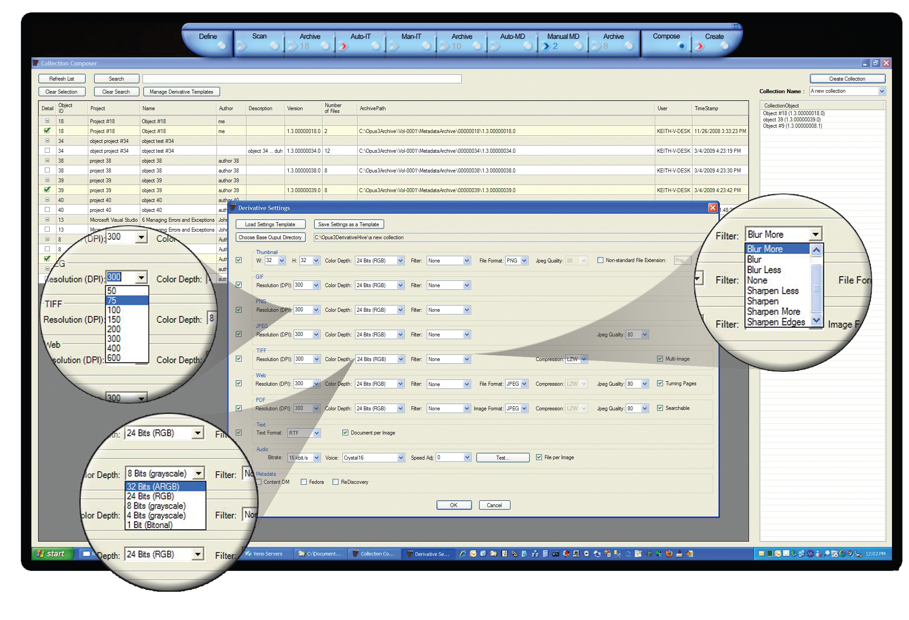

Opus Collection Composer
The first nine stages of Opus create normalized digital masters. The Opus Compose Collection facility withdraws objects from the stored normalized digital masters and publishes them to their final destination(s).
Composing collections couldn't be easier. Select the digital volumes that comprise the desired digital collection in minutes with Opus Collection Composer. Simply name the collection and begin adding objects by browsing the digital archives managed by Opus. A simple click of the mouse adds a volume to the collection.
Digital archives are reusable assets, especially when managed by Opus. Once you have created your archive, you can use it anytime to compose and automatically create new and different collections, course curriculum materials, etc. Online digital content and print-on-demand add to the many digital formats.